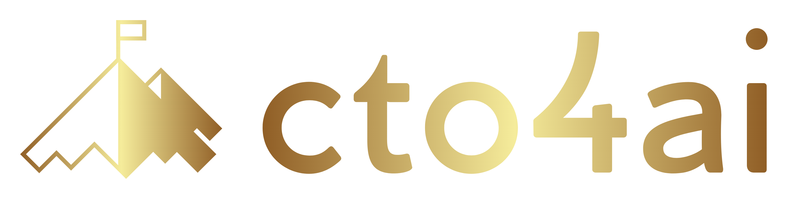

CTO4.AI Open Graph Image Generator
Right-click on the image below and select "Save Image As..."
Save it as
default.png
in
src/assets/images/
This will replace the AstroWind template image
The image is 1200x628px, optimized for social media sharing

Transcend local maxima.
Summit.
Transcend local maxima.
Summit.